Hyper Race 3D
Yükselişteki hyper casual-runner trendinin en iddialı oyunu. Oyuncu, koştuğu yolda karşısına çıkan engellere çarparsa engeller kırılır ve oyuncu yavaşlayıp rakibinin gerisinde kalır, ancak altından veya üstünden geçerse engeli atlatır. Karşısına çıkan büyük gri duvarı ise hızlıca kırıp geçmek zorundadır. Oyun henüz prototip aşamasındadır.
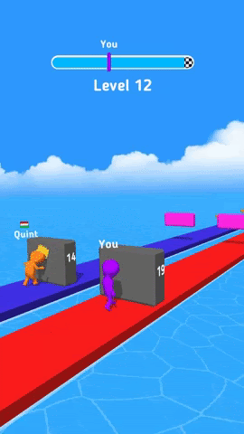 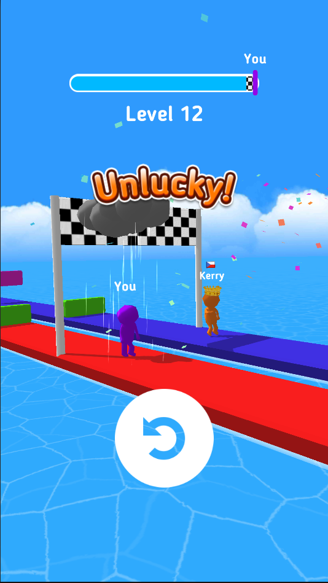 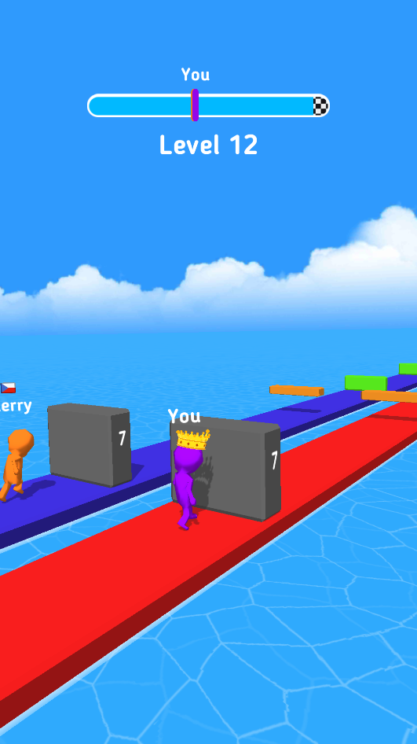 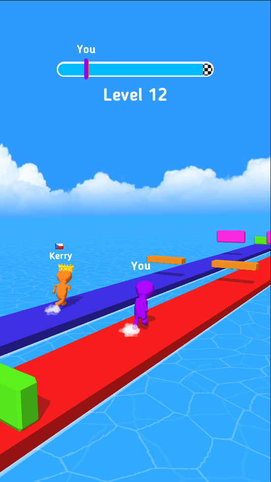Fast Pilot 3D
Özgün mekaniğe sahip bir endless runner olan Fast Pilot 3D, oyuncunun karşısına çıkan engellerden kaçarak altınları toplamaya çalıştığı eğlenceli bir oyun. Her birinde farklı engel çeşitleri olan 3 farklı tema mevcut. Ayrıca oyuncunun oyundan kazandığı altınlarla satın alabileceği birbirinden farklı özellikleri olan uçaklardan oluşan bir mağaza da bulunuyor. Oyuncu, oyun sırasında topladığı anahtarlarla sandık açabilir ve yeni uçaklara sahip olabilir.
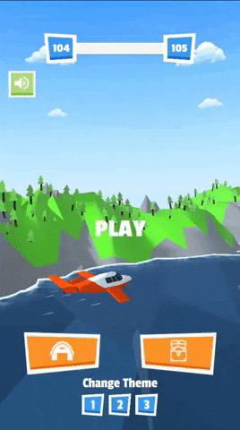 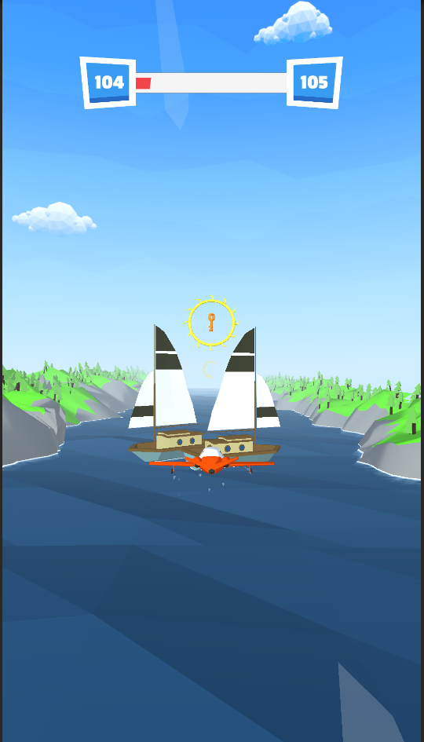 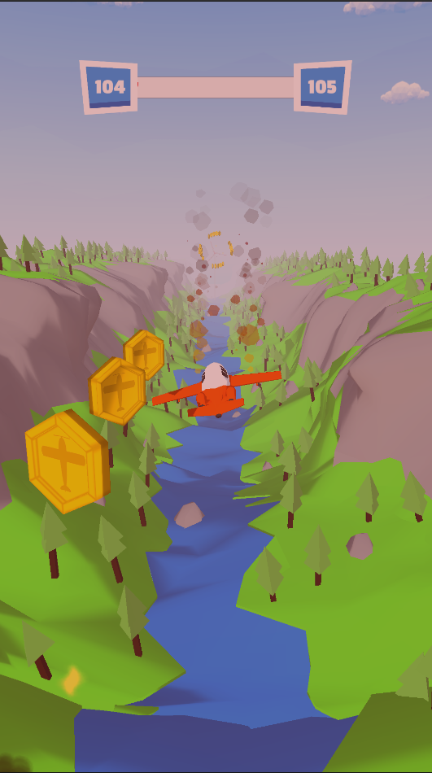 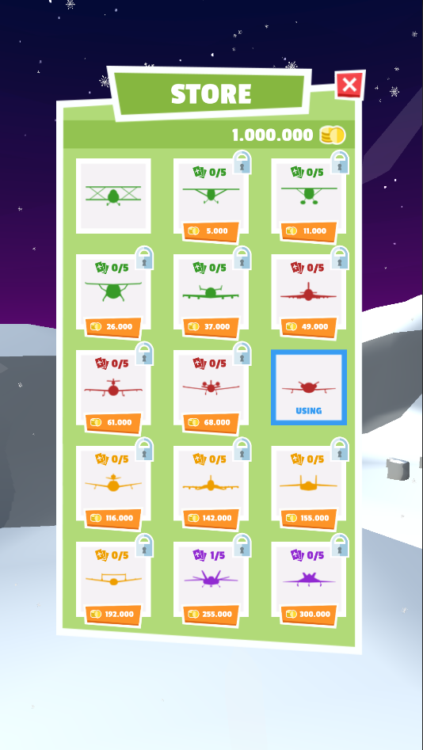ZigZag Hockey
Eski bir mekaniği modernleştiren ZigZag Hockey, oyuncunun ekrana tıklayarak topun yönünü değiştirdiği ve en sonunda kaleye ulaşmaya çalıştığı eğlenceli bir oyun. Oyuncu, oyun sırasında topladığı kupaları kullanarak mağazadan rastgele bir top açabilir.
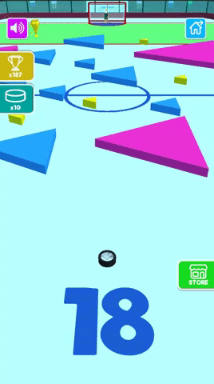 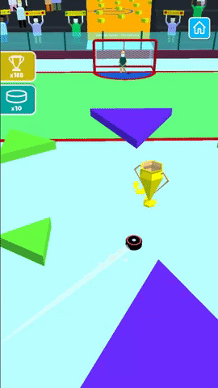 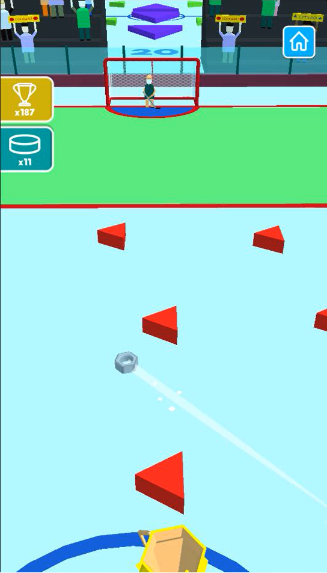 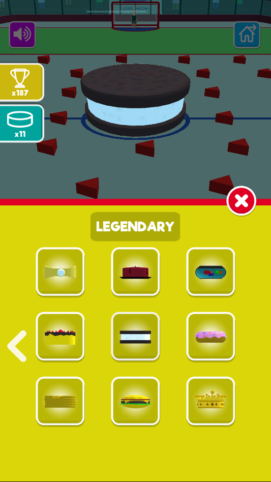